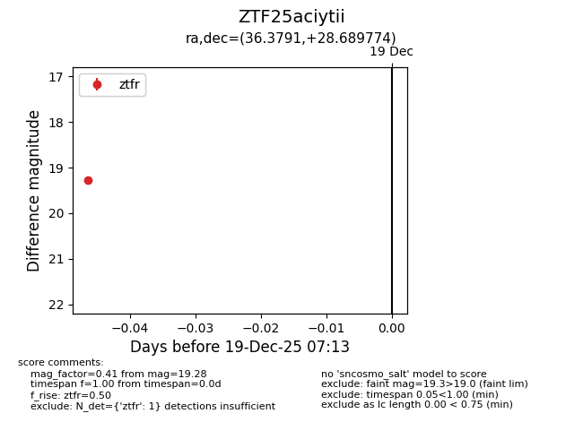
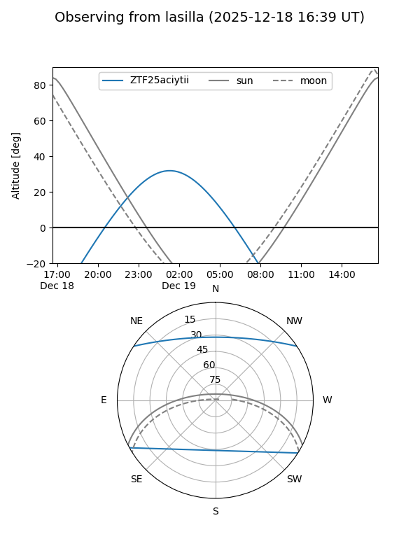
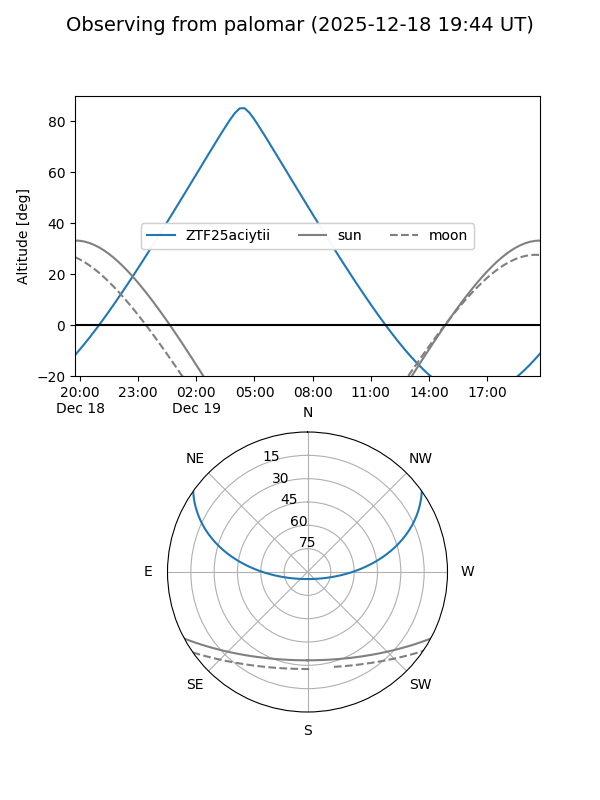

ZTF25aciytii
Target ZTF25aciytii at 2025-12-19 07:14
Aliases and brokers:
FINK: fink-portal.org/ZTF25aciytii
Lasair: lasair-ztf.lsst.ac.uk/objects/ZTF25aciytii
ALeRCE: alerce.online/object/ZTF25aciytii
alt names
ZTF25aciytii (ztf,fink_ztf)
Coordinates:
equatorial (ra, dec) = 36.3791,+28.68977
equatorial (HMS+DMS) = 02:25:30.99,+28:41:23.19
galactic (l, b) = (146.7237,-29.79928)
Flags:
Photometry:
last ztfr=19.28
1 ztfr detections
Lightcurve

Visibility


Additional plots